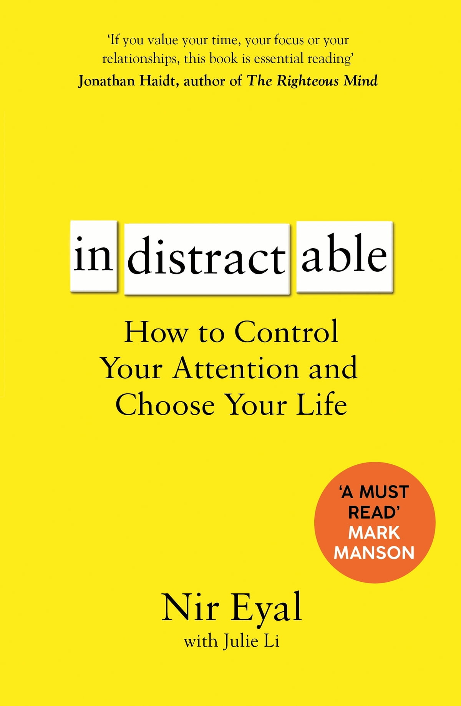
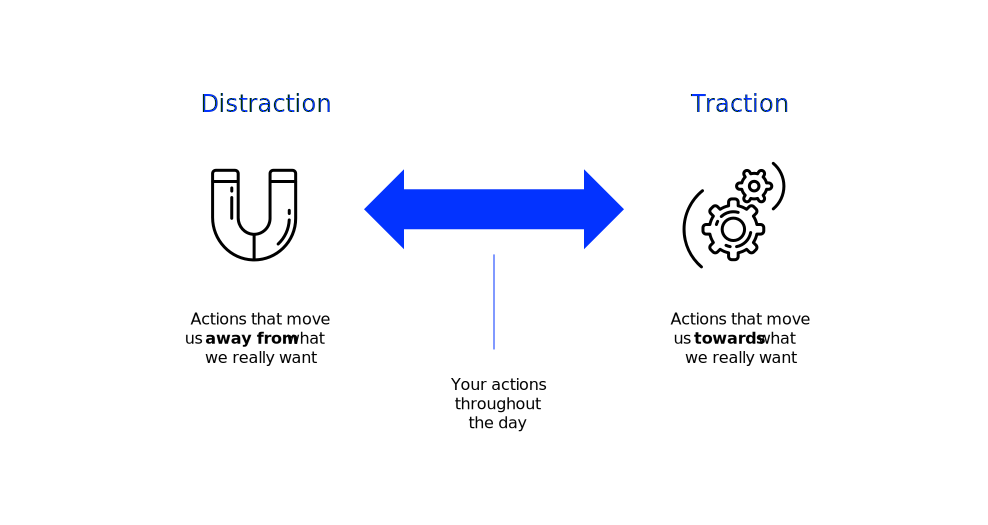
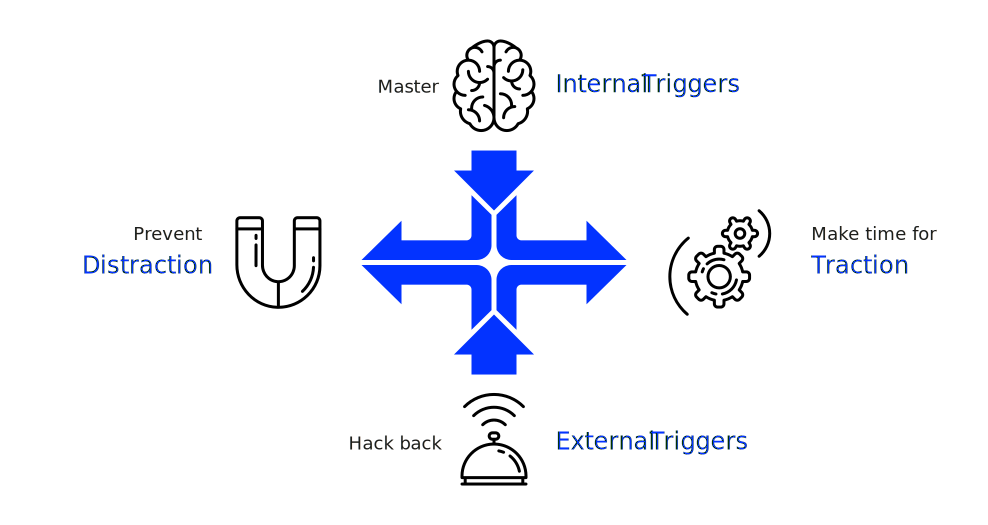

Prologue
Living the life we want not only requires doing the right things, but also neccessitates not doing the things we know we’ll regret. Nir Eyal, american author
This session is about theories and tools that help us focus on what’s important instead of being constantly distracted by the dazzling, illuminated, and unsatisfying distractions of modern life.
Foundation

This unit is inspired by and based on the book Indistractable by Eyal (2019)
Nir understands distraction down to its DNA—its neurology, its psychology, its emotions—and the framework he lays out in Indistractable teaches the reader how to attack the problem of each of its levels and take control of the reins of their mind. Tim Urban, writer and illustrator
Introduction
Indistractable
Procrastination
→ be honest with yourself
Being indistractable means striving to do what you say you will do.
Indistractable people are as honest with themselves as they are with others. Eyal (2019, p. 15)
Problem statement
The world is and has always been full of things to distract us, but
- The world today can be more distracting than ever (data, ubiquitous technology and unlimited access to content, …)
- The most sought-after jobs are those that require creative problem-solving, novel solutions and the kind of human ingenuity that comes from focusing deeply on the task at hand.
Problem: Instead of keeping focus on the things we say we will do (i.e., the important things), we often inclined to reach for things we supposedly need but really don’t (Eyal, 2019).
Traction and distraction

Traction comes from the Latin trahere and means to pull or drag. Traction lead you closer to your goals. It is any action that moves you towards what you really want.
Distraction is the opposite of traction and means ‘pulling the mind away.’ Distractions stops us from achieving our goals. It is any action that moves you away from what you really want.
The indistractable model

We can be indistractable by learning and adopting four key strategies: mastering internal triggers, hacking back external triggers, making time for traction, and preventing distraction with pacts.
Master internal triggers
Problem
Even when we think we’re seeking pleasure, we’re actually driven by the desire to free ourselves from the pain of wanting. Eyal (2019, p. 15)
What motivates us
But what is pleasure? Pleasure means not profligate pleasures, but absence of bodily pain and mental tarachai or troubles1 (Greek philosopher Epicurus according to Annas, 1987, p. 3)
We are not chasing highs; we are seeking relief from lows.
Thus, all motivation is a desire to escape discomfort.
- If a behavior was previously effective at providing relief, we’re likely to continue using it as a tool to escape discomfort.
- What prevents discomfort can be addictive (e.g., doom-scrolling), but that doesn’t make it irresistible.
- Good news: If you know the drivers of your behavior, you can take steps to manage them.
The mechanisms outlined above explain how behaviors become reinforced:
- You experience discomfort
- You do something that provides relief
- Your brain remembers: “this worked”
- You’re likely to repeat that behavior when discomfort arises again
This is essentially classical conditioning—behaviors that successfully reduce discomfort become habitual tools.
Anything that reliably removes discomfort has addictive potential because it creates that reinforcement loop. This could be substances, but also behaviors like social media scrolling, work, exercise, or even relationships—anything that temporarily soothes mental or physical discomfort.
The crucial final point: addictive doesn’t mean inevitable. Understanding why you do something (which discomfort you’re trying to escape) gives you power to:
- Recognize the pattern
- Find alternative relief strategies
- Make conscious choices rather than automatic reactions
Self-awareness is the key to behavioral freedom. Once you understand your discomfort-relief loops, you can intervene in them.
Satisfaction
I can’t get no satisfaction
’Cause I try, and I try, and I try, and I try Rolling stones
Why can’t we escape discomfort?
Research has identified four psychological mechanisms that keep us trapped in cycles of dissatisfaction:
- Boredom: It’s shocking how far people will go to avoid boredom. For instance, Wilson et al. (2014) found that participants typically did not enjoy spending 6 to 15 minutes in a room by themselves with nothing to do but think, that they enjoyed doing mundane external activities much more, and that many preferred to administer electric shocks to themselves instead of being left alone with their thoughts. Most people seem to prefer to be doing something rather than nothing, even if that something is negative.
- Negativity bias is a phenomenon in which negative events are more salient and demand attention more powerfully than neutral or positive events” (Chai et al., 2016, p. 2). There is ample empirical evidence that adults display a negativity bias, or the propensity to attend to, learn from, and use negative information far more than positive information (Vaish et al., 2008). Such pessimism seems to begin very early in life. Vaish et al. (2008) show that even babies as young as seven months show signs of negative bias. In a nutshell: bad ist stronger than good.
- Rumination includes reflection and brooding. Reflection refers to ‘a purposeful turning inward to engage in cognitive problem solving’, while brooding reflects ‘a passive comparison of one’s current situation with some unachieved standard’ (Treynor et al., 2003, p. 256). Put it simple, rumination is the tendency to keep thinking about bad experiences. Though rumination is a useful trait to discover sources of error or alternative strategies, it can make us miserable.
- Hedonic adaptation: We have the tendency to return quickly to a baseline levle of satisfaction no matter what happens to as in life (Eyal, 2019, p. 32). This leads to all kinds of life events that we think would make us happier not lasting very long.
Together, these four mechanisms create a psychological treadmill: we’re biologically wired to notice threats, dwell on problems, need constant stimulation, and quickly normalize any improvements. This explains why “trying and trying” doesn’t produce lasting satisfaction—our brains are designed to keep us vigilant and motivated, not content.
Pain management
Our tendencies toward boredom, negativity bias, rumination, and hedonic adaptations prevent us from ever being satisfied for long.
If we want to master distraction, we must learn to deal with discomfort. Eyal (2019, p. 33)
Feeling bad isn’t actually bad; it’s exactly what survival of the fittest intended. It is an innate power that can be channeled to help us make things better.
Dealing with internal triggers
Don’t ignore the trigger, because mental abstinence can backfire.
Resisting an urge can lead to rumination and increase cravings, ultimately leading to undesirable behaviors.
An endless cycle of resisting, ruminating, and finally giving in to the desire perpetuates the cycle and quite possibly drives many of our unwanted behaviours. Eyal (2019, p. 36)
Internal triggers can be managed by changing how we think about them.
Implications: Reimagine the trigger, the task, and your mindset.
Reimagine the trigger
Notice the urge and ride it like a surfer riding a wave, instead of giving in.
Implications:
- Step 1: Look for the emotion preceding distraction.
- Step 2: Write down the internal trigger (e.g, using an distraction tracker).
- Step 3: Acknowledge and explore your cravings with curiosity instead of contempt.
- Step 4: Be extra cautious during liminal moments2.
Eyal (2019, p. 42) recommends the ‘ten-minute-rule’ (McGonigal, 2013) to deal with distraction traps. When you are tempted to distraction, tell yourself that it’s fine to give in, but not right now, just wait ten minutes. This rule allows time to do what some behavioral psychologist call ‘urge surfing’. This accepting attitude allows an urge to grow and recede without taking action (to reduce negative affect or increase positive affect), when it takes hold (Ostafin & Marlatt, 2008).
Reimagine the task
Use fun and play in dreary task to keep you focused.
Fun is looking for the variabiltiy in something other people don’t notice. It’s breaking through the boredom and monotony to discover its hiden beauty. Eyal (2019, p. 48)
Implications:
Look for challenges in (tedious) tasks—deliberateness and novelty can be added to any task to make it fun.
I try to make gardening more fun by soaking up as much information as I can about the way grass (and weed) grows and how to treat it. I find it challenging to deal with the constraints I have (weather, tools, weed), be it fighting the weed or beating my record time in cutting grass. Operating under constraints is key to creativity and fun.
Change your mindest
Many studies offer evidence for a phenomenon called ego depletion—the idea that self-control or willpower draws upon a limited pool of mental resources that can be used up (Baumeister & Tierney, 2012). Some researchers also concluded that self-control relies on glucose as a limited energy source (i.e., the fuel in our willpower tank).
Believing we do run out of willpower makes us less likely to accomplish our goals by providing a rationale to quit when we could otherwise persist.
However, only recently Job et al. (2013) concluded that only people who view willpower as limited and easily depleted exhibited improved self-control after sugar consumption. People how did not see willpower as a finite resource did not show signs of ego depletion.
There is also the viewpoint that willpower acts like an emotion. Just as we don’t “run dry” of joy or anger, willpower fluctuates depending on what is happening to us and how we are feeling. Eyal (2019, p. 51) does concludes that “if mental energy is more like an emotion than fuel in a tank, it can be managed and utilized as such”.
What we say to ourselves matters. Labeling yourself as having poor self-control (e.g., the cravings are stronger then my willpower) actually leads to less self-control.
Implications:
Belief in your willpower and practice self-compassion, because people how do not see their willpower as limited resource and are more self-compassionate are more resilient.
Fight external triggers
Problem
Today much of our struggle with distraction is a struggle with external triggers. Eyal (2019, p. 94)
Effects
Tech devices often gain unauthorized access to our brains by exploiting a vulnerability.
The ubiquity of external triggers like notifications, pings, alerts, etc. makes them hard to ignore—they are intentionally designed to change our behavior.
For a behavior to occur, three things must be present at the same time: motivation (i.e., energy for action), ability (i.e., difficulty of a behavior), and a trigger (Fogg, 2009).
So if we feel uncomfortable and the action is easy to perform, we just need a trigger to tell us what to do next.
Review the trigger
Not all external triggers are harmful to our attention, we can also leverage them to our advantage.
The trouble is, despite the potential benefits external triggers can provide, receiving too many can wreak havoc on our productivity and happiness. Eyal (2019, p. 95)
Implications:
- Ask the critical question: is the trigger serving me, or am I serving it.
- If the trigger helps doing the thing planned, use it as a tool to stay on track.
- Hack back the external triggers that don’t help you gain traction.
Interruptions
Interruptions lead to errors—so eliminate them and don’t let your brain drain.
For critical activities, the work environment is designed to reduce disruption and distraction (e.g., sterile cockpit concept in nursing (see e.g., Broom et al., 2011)). Even the presence of our smartphone may impose a “brain drain”. Research shows that our brain has to work hard to ignore our cell phone when it is in your field of vision—so ignoring is not very helpful (Ward et al., 2017).
Implications: Defend your focus and signal when you do not want to be interrupted.
Hack back strategies
Some strategies to hack back common work-related distractions
- To get fewer emails, send fewer emails (e.g., respond not immediately but at a scheduled time).
- Group chat
- Use it like a sauna and get in and out at scheduled time, only involve who is necessary.
- Meetings
- Make it harder to call a meeting, no agenda, no meeting. Use the meeting for consensus not for problem-solving, be fully present and leave devices outside except for one laptop.
- Apps
- Use distracting apps on your desktop rather than on your phone, organize apps and manage notifications.
- Browsing
- Save articles, read or listen at a scheduled time and use apps to makes consumption less distracting.
You will find additional tips when doing a quick research on the web, e.g.
Make time for traction
Time planning
If you don’t plan our time, someone else will help to waste it. Ziglar (2021, p. 52)
Parkinson’s law is the observation that the duration of public administration, bureaucracy and officialdom expands to fill its allotted time span, regardless of the amount of work to be done (Parkinson, 1959).
Turn values into time
By being aware of your values (i.e., why you do what you do) and plan time to live up to your values, the difference between traction and distraction gets clear.
We should stop worrying about outcomes we can’t control and instead focus on the inputs we can. Eyal (2019, p. 70)
Implications:
- Timebox your day3. Plan time to live your values; plan time not only for work, but also for you (e.g., distraction) and your relationships.
- Reflect and refine. Revisit and refine your schedule regularly, but stick to it once it’s set(Gollwitzer, 1999).
Eyal (2019, pp. 63–64) recommends to set aside fifteen minutes a week to revisit and refine your calendar by asking following questions:
- When in my schedule did I do what I said I would do and when did I get distracted?
- What strategies can I use to manage the trigger next time?
- Are there changes I can make to my calendar that will give me the time I need to better express my values?
Eyal (2019, p. 64) also advises creating a schedule as a curious scientist rather than a drill sergant. This gives the freedom to get better with each iteration.
Schedule relationships
You and the people you love deserve more than getting the time you have left.
This is how friendships die—they starve to death. Eyal (2019, p. 78)
Implications:
- Schedule time for yourself first. By not allocating time for yourself, relationships and work will suffer.
- Schedule regular gatherings with loved ones. A lack of close friendships may be hazardous to your health, so plan time for maintaining important relationships.
Sync at work
Without visibility into how you spend your time, colleagues and managers are more likely to distract you with superfluous tasks. Eyal (2019, p. 87)
Defining how you spend your time and syncing your plans with the stakeholders in your life is critical for making time for traction in your day. Also at work.
Implications
Sync your schedule with your boss and your team to align expectations around how you spend your time.
- Get transparency in you schedule (e.g., use timeboxing)
- Ensure alignment on a regular basis (e.g., daily or weekly check-ins)
Prevent distraction
Self-control
Being indistractable not only requires keeping distraction out, it also necessitates reining ourselves in. Eyal (2019, p. 159)
Precommitments
After mastering internal and external triggers and making time for traction, precommitments help to prevent ourselves from distraction.
Precommitment means removing a future choice in order to overcome our impulsiveness (e.g., Ulysses pact, marriage, pension plans) (Kurth-Nelson & Redish, 2012)
Precommitments are powerfull because they cement our intentions when we’re clearheaded and make us less likely to act against our best interests later. Eyal (2019, p. 158)
We can prevent distraction with effort pacts, price pacts and identity pacts.
Effort and price pacts
An effort pact prevents distraction by making unwanted behavior more difficult to perform, e.g. by
- blocking access to distracting websites/tools or
- increasing social pressure by working next to someone).
An price pact adds cost to getting distracted (e.g., losing money).
- Price pacts are most effective when you can remove the external triggers that lead to distraction.
- Price pacts work best when the distraction is temporary.
Identity pacts
An identity pact is a precommitment to a self-image.
Research shows that an action (in this case, voting) that is presented as an expression of the self—a symbol of a person’s fundamental character (e.g., being a voter)—more likely to be performed than if it is simply referred to as a behavior (e.g., to vote) (Bryan et al., 2011).
Implications:
- Become a noun: call yourself “indistractable”
- Share with others: teaching others solidifies your commitment, even if you’re struggling
- Adopt rituals: perform routines that reinforce your identity and influence your future actions (e.g., by showing commitment to the group) (Hobson et al., 2018)
Challenges
You want to learn how to control your attention and chose your life, in short to became indistractable? Here are three challenges that might help you along the way.
- Level 1: Observe yourself over the next few weeks, note when you have been distracted, analyze the cause, and consider how you might become less distracted. You might use the distraction tracker.
- Level 2: Take three weeks and consequently timebox your day in all life domains (e.g., you, relationships, work). Reflect an refine your schedule regularly, but commit to it, once it’s set.
- Level 3: Engage with the people in your work context(s) (university, job), share the findings and strategies outlined here, discuss how you could apply the strategies to positively influence company culture and create an indistractable workplace, apply what you have agreed on and reflect the outcomes.
Reading list
For digging deeper, I recommend starting with following articles:
- Fogg behavior model: Fogg (2009)
- Implementation intention: Gollwitzer (1999)
- Negativity bias: Vaish et al. (2008)
- Precommitments: Kurth-Nelson & Redish (2012)
- Rituals: Hobson et al. (2018)
- Rumination: Treynor et al. (2003)
- Urge surfing Ostafin & Marlatt (2008)
- Self-determination theory: Deci et al. (2017)
- Willpower: Job et al. (2015)
Homework
To get to know, what we mean with (recent) theoretical and empirical findings and to prepare for our feedback class please read Dirks & Ferrin (2001) (download) and take some notes on the main constructs and findings.
Literature
Footnotes
In Epicurean philosophy, pleasure is the highest good, but not in the sense of indulgence. Instead, Epicurus distinguished between two types of pleasure: dynamic pleasures, which are the pleasures we feel when we satisfy a desire, such as eating when hungry, and static pleasures, which are the pleasures of being free from desire and pain, such as the contentment we feel when we are not hungry or thirsty. Epicurus argued that the most profound form of pleasure comes from achieving a state where we no longer have unfulfilled desires, thus freeing ourselves from the pain of wanting. This state of tranquility and freedom from disturbance is what he considered true happiness.↩︎
Liminal moments are distraction traps that transition us from one thing to another, like picking up our phone while waiting for a traffic light to change.↩︎
There are several tutorials available on how to use a calendaring tool for timeboxing, see e.g., How to Block Time on Google Calendar.↩︎